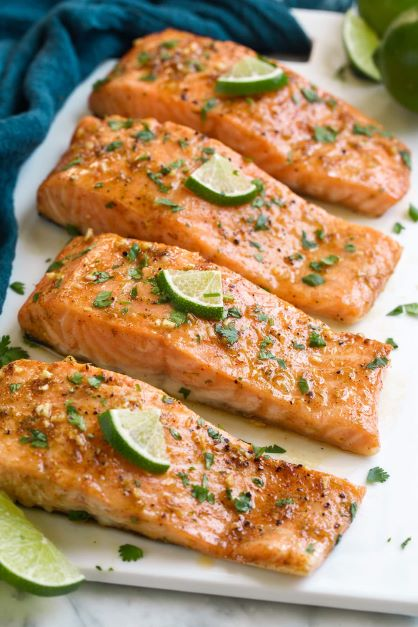

Salmon

Description
Salmon is one of my favorite things to make. It’s healthy, hearty and always satisfying.
You can never have too many salmon recipes, especially when they are this good!
This baked salmon recipe requires minimal ingredients and has such a quick prep.
Plus, you’ll love this flavor pairing of sweet brown sugar combined with bright and tart fresh lime to
compliment the rich and buttery flavor of the salmon.
Ingredients
- Brown Sugar
- Limes
- Garlic
- Butter
- Cayenne pepper
- Salmon fillets
- Salt and pepper
- Cilantro
Steps
-
In a small mixing bowl stir together brown sugar, lime juice, lime zest, butter and cayenne pepper.
-
Place salmon fillets in a dish. Spoon and spread lime mixture over tops and sides of salmon if using skin-on,
if using skinless salmon fillets spread mixture over top and bottom of salmon (use up all of the mixture).
-
Let marinate in refrigerator 30 minutes. Preheat oven to 425 degrees.
-
Line a 13 by 9 or 12 by 8-inch baking dish with Reynlids Kitchens Unbleached Parchment Paper. Place salmon
on parchment, leaving space between fillets.
-
Season with salt and pepper.
-
Bake salmon in preheated oven until it flakes easily with a fork, about 12 – 15 minutes
(cook time will vary based on thickness of fillets).
-
Sprinkle with cilantro and serve warm.